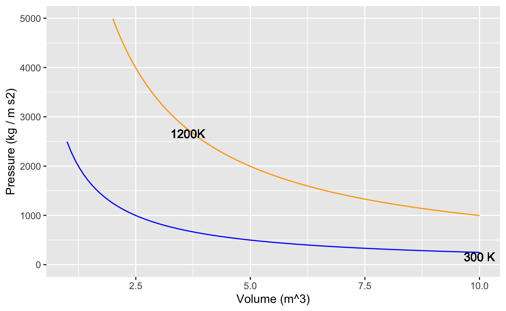
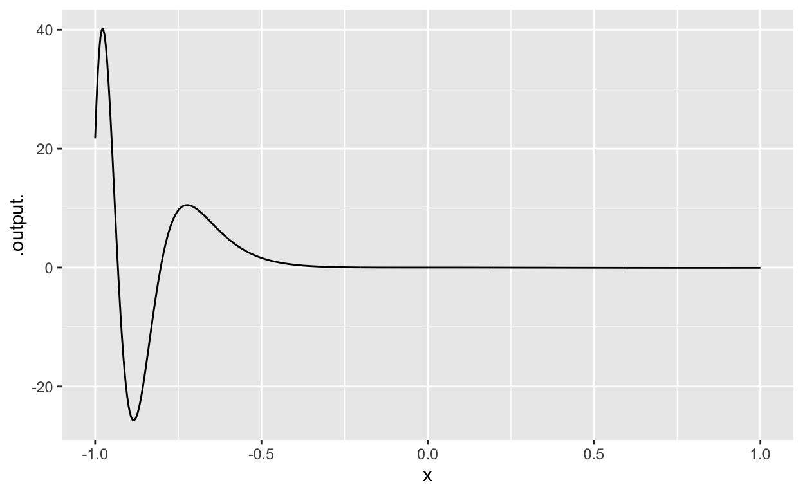

Objectives
- Determine dimensions and units utilizing a graph
- Graph the antiderivative of a function given the graph of the base function and a single point on the anti-derivative
- Know common scientific application relationships between base functions and anti-derivatives
- Acceleration, Velocity, Position
- Force, Work
- Area, Volume
- Probability Density, Cumulative Probability
Wind power
The function windspeed(t) records wind speed at the site of a wind-turbine farm over one day, that is, \(0 \leq t \leq 24\) hours. The function speed2power(s) is the production function for the model of wind turbine used at the farm: the input is speed in miles per hour, the output is in kilowatts. (Both these functions were created for this exercise. They are not about a real turbine at a real wind farm, but are somewhat realistic.) Hint: you can nest a function inside of another function. For instance, if I had a function (‘solarpanelpower’) that calculates the amount of power a solar panel generates and another function (‘sunlight’) that tells me the amount of sunlight at time of the day (‘TOD’). I could evaluate this in one step like the following: ‘solarpanelpower(sunlight(TOD))’. This would give me the amount of power from the solar panel based upon the time of the day.
Your task, find the total energy generated over the 24-hour period by the turbine. Reminder: energy \(E\) is electric power multiplied by time. Or, more usefully for this problem, the increment energy \(dE\) generated at time \(t\) is the product of power at time \(t\) multiplied by the increment of time \(dt\), that is, \(dE = p(t) dt\). Consequently, \[E = \int_\mbox{morning}^\mbox{night} p(t) dt\] where “morning” should really be 00:00 h and night 24:00 h on the day in question.
We don’t have an algebraic formula for windspeed(t) even though it is a function. You can use antiD() to find the anti-derivative of the electric power function. See the section on “Computing and anti-differentiation” further on in this document.
The answer you compute should be saved to the name result. The units will be in kWh – kilowatt hours.
slice_plot(windspeed(t) ~ t, domain(t=c(0, 24)))
# # Uncomment the next lines as you figure out how to fill in the "...blanks..."
# antid_of_power <- antiD( ....power_function_here(t)... ~ t)
# result <- antid_of_power(...night...) - antid_of_power(...morning...)
# result # this prints out the resultgradethis::grade_result(
#fail_if( ~ ! "result" %in% names(.env), message="Your result should be stored under the name `result`."),
fail_if( ~ ! is.numeric(.env$result), message = "Your result should be a number."),
fail_if( ~ .env$result < 110 && .env$result > 109, message = "It looks like you are integrating the wind speed over the 24-hour period. But you were asked to find the total *energy* produced. For this, you need to integrate *power*."),
pass_if( ~ abs(.env$result - 10786.4) < 100, message="In other words, about 11 kilowatt hours (Kwh)."),
fail_if( ~ .env$result < 1, "Are you sure you have `windspeed()` and `speed2power()` in the right order?"),
fail_if( ~ TRUE)
) Heat engines
In the 1660s, John Boyle made use of then-new instrumentation to measure gas pressure. He discovered what’s now called Boyle’s Law, which says that, at constant temperature in a closed system, pressure times volume is a constant:
\[PV = const\] In the 1720s, Daniel Fahrenheit developed the first reliable thermometer consisting of a column of mercury in a glass straw. He developed a temperature scale which divided the range from freezing to boiling into 180 small units, which he called “degrees,” as was traditional in measuring angles. (In 1742, Anders Celsius created another scale with freezing at 0 and 100 small units—still called “degrees”—between freezing and boiling.
With the availability of reliable thermometers, scientists started to consider the role of temperature in the relationship between pressure and volume. Their many discoveries were eventually synthesized into a “combined gas law” and then into an “ideal gas law” which famously states: \[PV = nRT .\] Here, \(n\) is “amount” of gas, quantified as the number of moles of the gas in the container, \(T\) is temperature, and \(R\) is the “ideal gas constant”: \[R = 8.314 \mbox{J}/(\mbox{K}\ \mbox{mol})\] The “mol” cancels out the dimension of \(n\), the \(K\) cancels out the dimension of \(T\), leaving us with \(PV\) having the dimension of energy (Joules). The temperature \(T\) is measured in degrees Kelvin, which is just like Celsius but moving the location of 0 from freezing to … well … the hypothetical temperature when \(PV=0\), which can be estimated by extrapolating measurements of \(PV(T)\) (that is, \(PV\) as a function of \(T\)) to the \(T\) where \(PV = 0\).
For use in calculus, it’s helpful to re-write the Ideal Gas Law in functional form. There are several ways to do this. For instance, if we wanted to measure the number of moles of gas in a container, we could use the function \(n(P, V, T) = PV/RT\). Here, we’re going to focus on pressure as a function of the other quantities: \[P(n, V, T) = nRT/V.\] Now consider a very simple machine consisting of a cylinder, closed on one end and sealed by a movable piston at the other, as in this picture.

Source: R. Castelnuovo - Own work, CC BY-SA 3.0
The machine in the picture is more complicated than the simple machine we want to model. The picture includes two small valves at the top of the cylinder connected each to a pipe.
Our machine has no valves and no pipes. The cylinder is charged with gas when it is manufactured. After that, nothing material goes in or out of the closed cylinder/piston system.
When you push on the cylinder, the volume available for the gas gets smaller and the pressure increases. When you let the cylinder push on you, the volume available gets bigger and the pressure decreases. The amount of gas, \(n\), never changes. For simplicity, we’ll imagine that \(n=1\) and that the gas is N\(_2\). This means the mass of the gas is 0.028 kg.
And, to simplify even more, let’s insist that the temperature of the cylinder and its gaseous content does not change from room temperature: 293\(^\circ\) Kelvin.

If you start in a high-volume, low-pressure state and push the piston to move to a low-volume, high-pressure state at the same temperature, you will be putting energy into the machine.
The “area” of each little box in the graph, that is, pressure times volume,
Now that you have compressed the gas in the cylinder, by doing work on it, let’s heat up the machine to 1200K.
The net work done by the machine in completing the cycle, shifting from compression at low temperature to expansion at high temperature, is the difference between the energy put out by the machine when expanding and the energy put into the machine to compress the gas. Such a machine is called a “heat engine” since it turns a source of high temperature and a source of low temperature into energy.
In the sandbox, you have been given a function \(P(V, T)\) with default \(n=1\) mole of gas. Anti-differentiate \(P()\) with respect to \(V\) then calculate the energy needed to compress the cylinder at the low temperature, that is \[\int_{7.5}^{2.5} P(V, T=300) dV .\] Call this numerical result compress_energy.
Similarly, calculate the energy done by the machine in the high-temperature expansion \[\int_{2.5}^{7.5} P(V, T=1200) dV .\] Call this numerical result expand_energy.
You may want to make a graph of your \(P(V, T)\) function to check that it is right. Also, check that the integrals are right by comparing them to the rough estimate you made earlier by counting squares.
P <- makeFun( n*8.314*T/V ~ V + T, n=1)
antiP <- makeFun(n*8.314*T*log(V) ~ V + T, n=1)
compress_energy <- ... evaluate antiP appropriately
expand_energy <- ... ditto
compress_energy # prints out the values
expand_energy# myP <- makeFun(n*R*T/V ~ V & T, R = 8.314, n = 1, T = 293)
grade_result(
#pass_if( ~ compress_energy < 0, message = "It was negative"),
fail_if( ~ ! abs(abs(compress_energy) - 2740)<1, message="Are you sure you set the temperature to 300K and integrated from V = 7.5 to 2.5?"),
fail_if( ~ ! abs(abs(expand_energy) - 10960)<1, message="Are you sure you set the temperature to 1200K and integrated from V = 2.5 to 7.5?"),
pass_if( ~ TRUE)
)Graphing anti-derivatives
The top graph shows a function \(f(t)\).
Answer the following questions about the anti-derivative \[F(t)\] where \[F(t) \equiv \int f(t) dt\]
You can make measurements by click/dragging the mouse on the bottom graph.
Stats on F() for orange lines
Integral of the Day
Work out this anti-derivative on paper.
Once you have your result, translate it into a correct R function. Use c0 as the R name for \(c_0\), c1 for \(c_1\), c2 for \(c_2\), and x0 for \(x_0\). Although the constant of integration \(+C\) is properly a part of the definition, don’t include it in your R function. This is basically the same as selecting \(C=0\).
F <- makeFun( ~ x)library(magrittr)
gradethis::grade_result(
fail_if( ~ !is.function(.result), message = "Your result should be in the form of a function."),
fail_if( ~ !all(correct_arguments %in% names(formals(.result))),
message = "You don't seem to have the right argument name."),
pass_if( ~ all(.result(x=1:10, x0=5, c0=1,c1=2,c2=3) ==
answer_fun(x=1:10,x0=5, c0=1,c1=2,c2=3))),
fail_if( ~ TRUE, message="Correct arguments, but not the right function.")
) Now that you have the correct answer, use Latex to typeset the formula in the function here. Some Latex tips: c_0 will produce \(c_0\). You do not need to do the LaTeX code until you see the green checkmark. If your integral was validated by the codebox above, then you have the correct answer, we now want you to explore formatting correctly using LaTeX. The system to provide you with a green checkmark looks for the answer the way your instructors would type it. In this case, write your anti-derivative in the same order of coefficients as used at the top of this problem and use \(C\) at the end if you want to include an explicit constant of integration. If there is a fraction multiplying a coefficient, write it like \frac{1}{5} c_5 which would give \(\frac{1}{5} c_5\). (Just an example; the actual problem doesn’t have any \(c_5\) in it.)
Computing and anti-differentiation
We introduced anti-differentiation through the algebra of our basic modeling functions. With those functions, it’s pretty easy to see that the derivative of the anti-derivative is the original function, as in \[\partial_x \int \sin(x) dx = \partial_x [-\cos(x)] = \sin(x)\]
Later in the course, you’ll see somewhat more complicated functions where the anti-derivative can be found using some technique or another. (Student’s often pronounce “a technique” as “a trick,” at least until they become familiar it.) For many students, learning the algebra of anti-differentiating complicated functions is the hardest part of the course and drains away their confidence in their calculus abilities. That’s a shame, because there are other ways than algebra to compute anti-derivatives and also functions for which no algebraic anti-derivative is possible.
An important idea in computing is “abstraction.” Abstraction means, in computer science, that you don’t need to know the internal details of an operation in order to use it. For instance, in computing sin(x), all you need to know is that x should be numeric. The particular algorithm used to do the calculation is, ideally, irrelevant to the user.
We have abstracted anti-differentiation into a single R function, called antiD(). As you know mathematically, anti-differentiation is an operation performed on a function with respect to one of the arguments to the function. It’s the same with antiD(): you need to specify the function and the “with respect to” variable. You do that in exactly the same way as you do with the D() operator used for differentiation, with a tilde expression. (makeFun() also uses tilde expressions.)
For example:
f1 <- antiD(sin(x) ~ x)
f2 <- antiD(exp(-k*x)*sin(2*pi*x/P) ~ x, k=2, P=4)
f3 <- antiD(ifelse(t > 0, t^2, -t^2) ~ t)As you expect, f1, f2, and f3 are all functions. You evaluate them in the usual way, reducing the calculation of a definite integral to a difference of two evaluations of the functions, for instance:
f1(pi/2) - f1(0)## [1] 1f2(12, k=2, P=4 ) - f2(5, k=2, P=4)## [1] 1.403961e-05f3(5) - f3(-4)## [1] 20.33333antiD() is an example of computing abstraction because you do not need to know what is going on internally. All you need to know is how to hand a function and a with-respect-to variable as arguments, and that the returned result will be a function of the with-respect-to variable (as well as any other variables in the original function).
For some very simple functions, like sin(x), the function returned by antiD() will be familiar:
f1## function (x, C = 0)
## -cos(x) + C
## <bytecode: 0x7fb374a14650>For functions with symbolic parameters, such as in f2(), the anti-derivative function will have the with-respect-to variable as the first argument and any remaining variables as named arguments in no particular order.
f2## function (x, k = 2, P = 4, C = 0)
## {
## numerical_integration(.newf, .wrt, as.list(match.call())[-1],
## formals(), from, ciName = intC, .tol)
## }
## <environment: 0x7fb376117bd8>For such functions with parameters, to evaluate the anti-derivative for at a numerical input x requires that all the parameters also be given numerical values. In f2(), defaults for these numerical parameters were assigned at the time of creation, but you can use other values for them whenever you evaluate the anti-derivative.
The function returned by antiD() often will appear mysterious, as in f2(). Following the principle of abstraction, you don’t have to know or understand the internal details of the function’s algorithm. You only need to know how to use the function. One way to use it is to evaluate it at specific numerical inputs. Another way to use it is to construct other functions, as in this entirely made up and probably useless example:
g <- D( cos(f2(x)^2 + f2(x)) ~ x)
slice_plot(g(x) ~ x, domain(x=c(-1,1)), npts=500)
The abstraction built in to antiD() function is not perfect. antiD() knows about certain pathologies of functions, such as \(g(x) = 1/x\), which isn’t defined at \(x=0\), but doesn’t necessarily handle them in the way a skilled, thinking person would. Still, when you need an anti-derivative and don’t see any way to get an algebraic expression for it, antiD() often lets you get on with your work.
Hand in your work
REMEMBER: Press the REFRESH button before copying the hash code and submitting it at the USAFA Math 142Z site
Location: CalcZ/_DailyDigitals/DailyDocuments/inst/DD-142Z-07/142Z-DD-07.Rmd DD-142Z-07